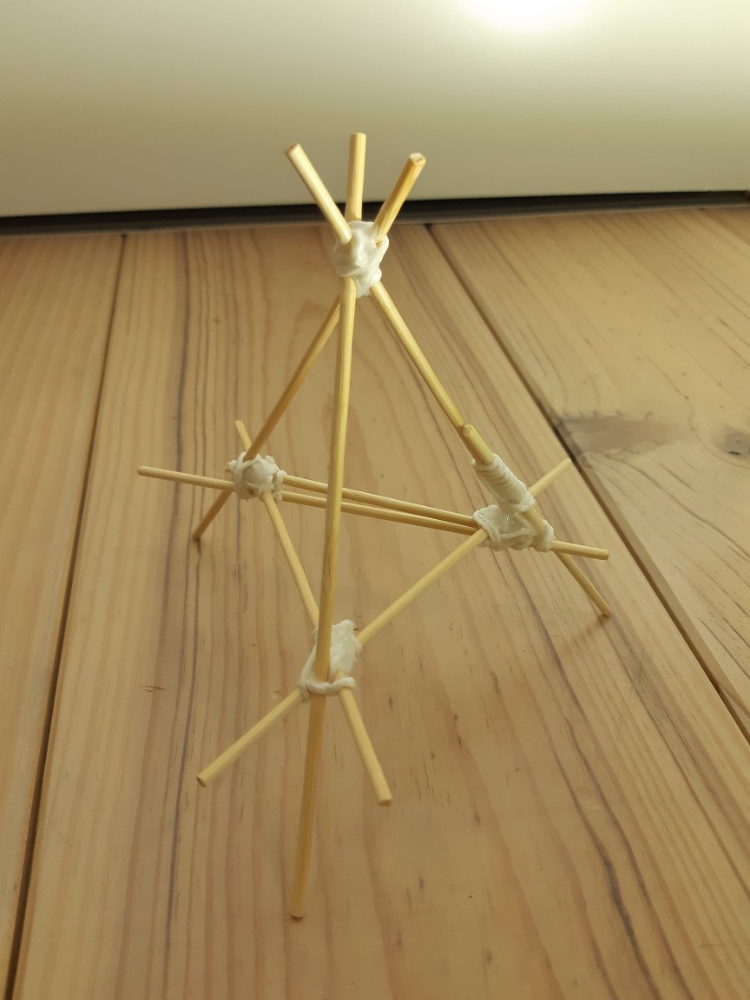
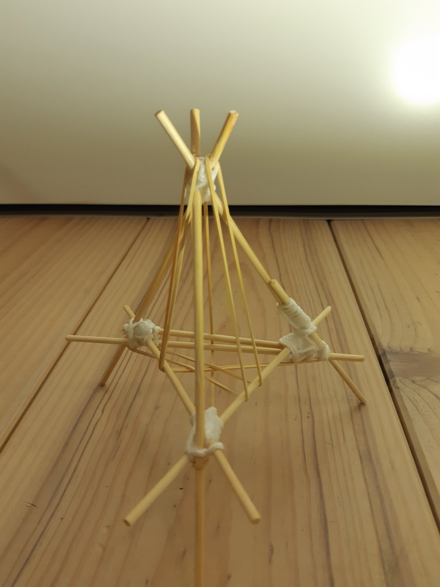
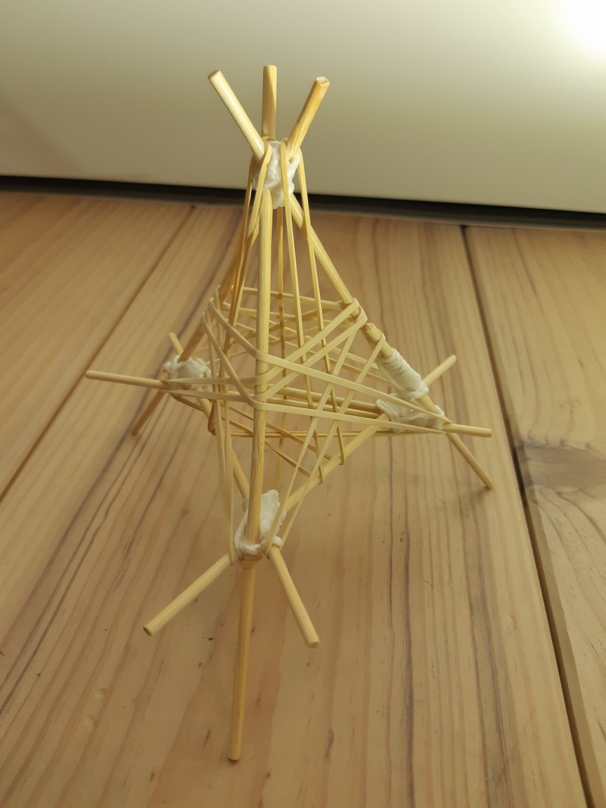
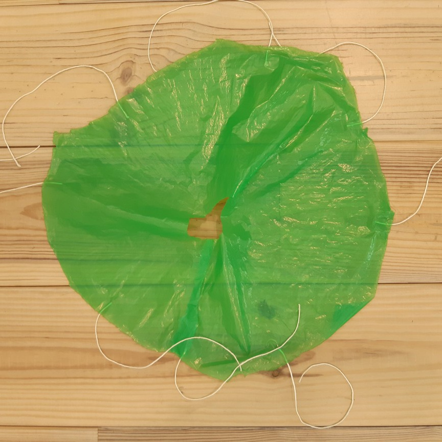

Here's the deal. You need to drop an egg from the third floor, and it has to survive. You might think that's easy, just wrap it in a bunch of bubble wrap. But that's not how it goes this time. We had to design something that meets these criteria:
Use an M size egg.
You can't use any filler material like wool, cotton, sponge, balloons, or hairgel.
The starting size is a maximum of 12x12x12cm.
The egg needs to be inspected within 20 seconds after falling.
The egg needs to stay intact without cracks.
The same egg needs to be used for each drop.
The fall needs to be a free fall, so no bungee cord or other attatchments.
Design Proposal
Our design will be a triangular pyramid structure much like other teams’ design, but instead of using straws we decided to use wooden skewers. We came up with the brilliant idea of using string with wood glue to hold the skewers together, which turned out to be really strong.
Materials
6 wooden skewers
6 rubber bands
Cotton or hemp string (plastic will not absorb glue)
Scotch tape
Plastic garbage bag
Wood glue (preferrably fast curing)
Scissors
Procedure
We created a triangle using three wooden skewers with roughly 8cm in the middle and tied it together with string. We left 2cm of overhang and cut the rest off. We then glued the string and left it to dry. We added three skewers in the corners with 4cm sticking out on the bottom and tied the tops together to make it slightly taller than is it wide, to accommodate the shape of the egg. The overhang on the top is minimal. We then glued it and left it to dry again. We later broke two skewers while testing without a parachute and had to add new skewers alongside the broken ones.

The rubberbands are added in a specific manner. Three strecht across the bottom and up one side, mainly to keep the egg from falling out the bottom.

The other three bands wrap around the sides. We tried using only the first three but the egg ended up slipping out the side.

The parachute was made by cutting out a flat piece of garbage bag, cutting out the corners and taping them together. We also added some straws as struts.

Testing Design
The shuttle design made from wooden skewers worked really well but the parachute didn't work that great. It does create more than enough drag but we had to add straws to make it stay open and it needed to be thrown unfolded in order to perform well, thus not meeting the size constraint. It was also prone to collapsing. We decided that we needed a better parachute to meet the criteria.
Improving Design
We did some research online on how to fold a parachute and we found out along the way that a round parachute with eight strings performs much better than one with four strings. We also found that putting a hole in the middle of a parachute is done to improve stability and decrease the chances of collapsing.
So that's what we did. We cut out a circle, cut a hole in the middle and cut a section from one side to create a shallow cone shape. We then attached eight strings with tape and glued them together to one string.
Final Design
Nothing other than the parachute has changed about our original design.
Evaluating
The final design slowed the craft down and passed the tests without a problem. The egg was completely unharmed and the structure didn't break. The only flaw was that it drifted horizontally.
The parachute opened quickly and provided sufficient drag to slow the craft down. The skewers easily dampened the fall without breaking.
The parachute was slightly asymmetrical, which caused the horizontal drift. In a future iteration I would be more precise while cutting out the parachute and also make sure the string are an equal length and spaced evenly.
How not to do it...
This was a different team that made some significant mistakes. The parachute is flat and only has four strings and they attached the strings to straws sticking out, which only amplified any imbalances in the capsule. They could have improved much more, had they done more testing and analysis.